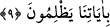

9. Kimin de tartıları hafif gelirse, işte onlar, ayetlerimize karşı haksızlık
ettiklerinden dolayı kendilerini ziyana sokanlardır.
“Kimin (sevap) tartıları hafif gelirse”
Tibyân’da İbn Abbas’tan şöyle nakledilir: Terazinin iki kefesinin biri nurdan, diğeri
zulmettendir. İyilikler nur kefesine, kötülükler zulmet kefesine konur. “İşte onlar da
ayetlerimize haksızlık etmelerinden ötürü” yani, ayetlerimizi tasdik edecekleri yerde
yalanlayarak Allah’ın yarattığı selim fıtratı bozmaları ve kendilerini azaba götürecek
amelleri işlemeleri sebebiyle “kendilerini ziyana sokanlardır.”
Haddadî der ki: Hüsran, sermayeyi kaybetmektir. İnsanın sermayesi ise nefsidir. İnsan
kötü amelleri sebebiyle helâk olduğunda nefsi hüsrana uğratmış demektir.
et-Te’vîlâtü’n-Necmiyye’de şöyle denilmiştir: “Kıyamet günü Allah katındaki tartı
(ölçü), hakdan yana, doğrudan tarafa olanlar için ve iyi ameller hakkındadır. Bâtıl ve
bâtıldan yana olanlar için ölçü ve tartı yoktur. Şu ayet buna delâlet eder: “Kıyamet
günü onlar için bir terazi kurmayız.” (el-Kehf 18/105)
Rivayet edilir ki: “Kıyamet günü iri yarı, vücûdu dolgun, uzun boylu ve yeme
içmeye düşkün bir adam getirilip tartılır. Ağırlığı sivrisineğin kanadı kadar
gelmez.”[3]
Bazı alimlere göre bu rivayet hesap gününde şahısların tartılacağına delâlet eder.
Ancak cumhura göre o gün amellerin yazıldığı sahifeler tartılacaktır. O terazinin bir dili
ve iki kefesi olacaktır. Adaleti göstermek ve mazeretlere imkân vermemek için bu tartı
tüm yaratıkların önünde olur. Nitekim insanlara amellerinin nasıl olduğu sorulduğunda
dilleri ve bütün azaları kendileri hakkında şahitlik edecektir. O gün peygamberler ve
melekler de onların aleyhinde şahitlik ederler. Zaten insanoğlunun iyi ve kötü bütün
amelleri amel defterlerinde tesbit edilmiş durumdadır. Hesap gününde herkes,
yaptıklarını amel defterinde hazır bulacak ve ne işlediğini oradan okuyacaktır. Nitekim
şu rivayet de bunu teyid etmektedir:
“Kıyamet günü bir adam mizana getirilir de onun için doksan dokuz adet dosya
açılır. Her dosya, gözün alabildiği kadar uzundur. Nihayet onların içinden bir kağıt
parçası çıkarılır. Üzerinde kelime-i şehâdet yazılıdır. Terazinin bir kefesine dosyalar,
diğerine de üzerinde kelime-i şehâdet yazılı olan kağıt parçası konur. Dosyalar hafif
gelir. O kağıt parçası ise ağır basar.”[4]
Rivayet edildiğine göre Davud (a.s.), Rabb’inden kıyamet gününde kurulan mizanı
kendisine göstermesini istedi. Terazinin her bir kefesinin doğu ile batı arasını
dolduracak kadar geniş olduğunu gördü. Bunu görünce düşüp bayıldı. Ayıldığı zaman: